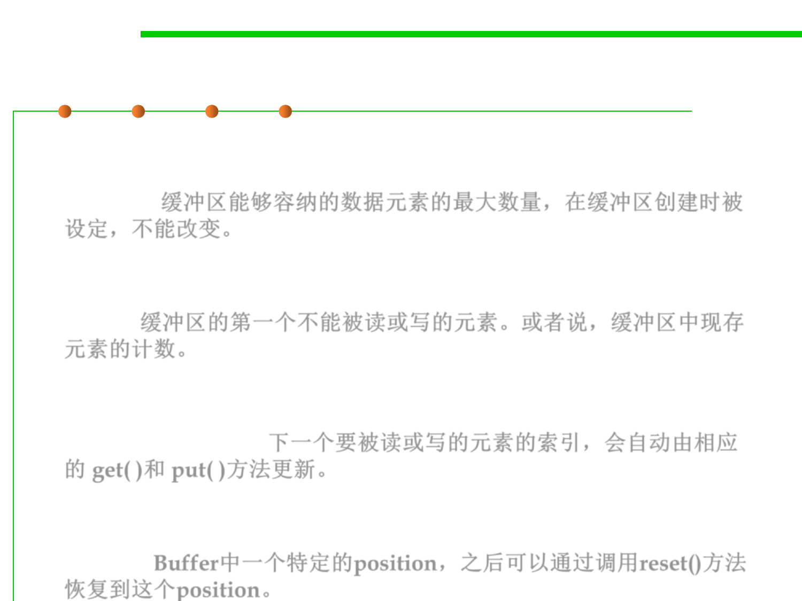

8.1 Metrics, Principles, and Methods of Construction for Performance
Fields of Buffer
▪ 容量(Capacity)：The maximum number of data elements a buffer
can hold, which is set when buffer is created and cannot be
changed. 缓冲区能够容纳的数据元素的最大数量，在缓冲区创建时被
设定，不能改变。
▪ 上界(Limit)： The first element of the buffer that cannot be read or
written. In other words, the count of existing elements in the
buffer. 缓冲区的第一个不能被读或写的元素。或者说，缓冲区中现存
元素的计数。
▪ 位置(Position)： The index of the next element to be read or
written which is automatically updated by the corresponding get ()
and put () methods. 下一个要被读或写的元素的索引，会自动由相应
的 get( )和 put( )方法更新。
▪ 标记(Mark)： An index that specifies a particular position in the
buffer, and then recovers to that position by calling the reset ()
method. Buffer中一个特定的position，之后可以通过调用reset()方法
恢复到这个position。